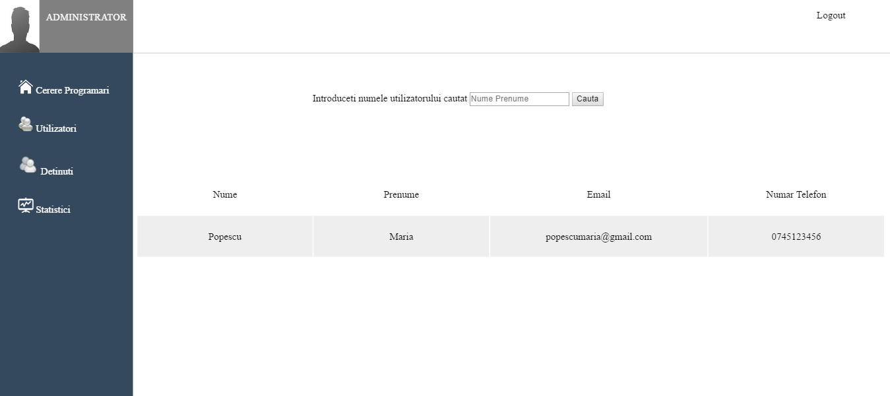

Documentatie Deton
Abstract
Proiectul are drept scop gestionarea vizitelor ce au loc în incinta unui penitenciar, oferind informații și statistici cât mai relevante persoanelor cu drept de vizualizare a datelor. De asemenea, aplicația oferă celor ce doresc sa viziteze un deținut posibilitatea de a realiza o programare, printr-o interfață user-friendly și ușor de folosit.
Motivația
În viața de zi cu zi, pentru instituțiile ca o închisoare, arhivarea fizică a datelor despre deținuți și vizitele acestora poate fi extrem de dificilă.
Prin intermediul aplicației, dorim să ușurăm acest proces, și să oferim administratorilo o metodă simplă de a analiza această activitare, și de a extrage informații cât mai relevante pentru îmbunătățirea procesului. De asemenea, oferim persoanelor ce doresc să viziteze un deținut un mod de a realiza o programare, și de a vedea informații despre vizitele și programările realizate.
Descrierea aplicației
Deton este o aplicație Web ce ajută la gestionarea vizitelor din cadrul unui penitenciar, precum și înregistrarea și analiza datelor rezultate în urma acestora. Aplicația stochează informații despre programări și vizite într-o bază de date SQL, astfel încât acestea vor putea fi colectate oricând întru-un mod simplu și rapid. Utilizatorii ce doresc să acceseze datele astfel înregistrate sunt nevoiți să se autentifice, asigurând astfel securitatea informațiilor. Dacă aceștia nu au cont, atunci vor fi nevoiți să își creeze unul.
Odată ce s-au autentificat, utilizatorii oarecare au posibilitatea de a realiza o nouă programare, completând câmpurile necesare, sau de a vedea arhiva programarilor deja înregistrate, precum și arhiva vizitelor realizate de utilizatorul respectiv până în momentul curent.
Utilizatorii cu drept de administrator au opțiunea de a vedea toate programările înregistrate până în acest moment, precum și de a adăuga o nouă vizită în momentul realizării acesteia, adăugând la informațiile completate de vizitator noi date referitoare la modul în care a decurs vizita.
De asemenea, utilizatorii cu drepturi de administrare au posibilitatea de a genera într-un mod intuitiv statistici despre vizitele înregistrate, în funcție de:
- intervalul realizării acestora
- deținutul vizitat
- crima pentru care au fost condamnate persoanele încarcerate
Aceste statistici pot ajuta la evaluarea lunară sau la anumite intervale a activității penitenciarului, și pot reprezenta un pas de pornire în schimbarea modului de lucru pentru a duce la performanță îmbunătățită în cadrul instituției.
Tehnologii
Aplicația este realizată utilizând HTML5 și CSS3 pentru partea de front-end, iar partea de back-end este implementată în limbajul PHP 7.
Pe partea de server am utilizat Apache, iar pentru stocarea datelor am folosit MySQL.
Front-end
Interfața aplicației este reprezentată de un număr de pagini prin intermediul cărora utilizatorul interacționează cu partea de back-end.
Pagina principală
În pagina principală, utilizatorului îi este oferită opțiunea de a se autentifica utilizând e-mailul și parola specifice, sau de a-și crea un cont. De asemenea, dacă dorește să afle informații prin care să contacteze penitenciarul, acesta poate accesa link-ul oferit.
Contact
Utilizatorul poate prelua de aici informații legate de penitenciar, precum adresa, e-mailul, numărul de telefon sau de fax, și localizarea pe hartă.
Creare cont
Utilizatorul își poate crea un cont prin intermediul căruia să își programeze vizite și să poată vedea istoricul vizitelor și programărilor ulterior realizate. Acesta trebuie să completeze toate câmpurile, oferind astfel informații precum numele, prenumele, adresa de e-mail și numărul de telefon, precum și o poză. După completarea formularului de creare de cont, va fi redirecționat în mod automat spre pagina de autentificare, de unde își va putea accesa contul nou creat cu informațiile completate anterior.
În cazul în care utilizatorul dorește, se poate întoarce la pagina de autentificare prin intermediul link-ului oferit.
Pagina principală a utilizatorului oarecare
În pagina principală a utilizatorului cu drepturi obișnuite, acestuia îi este oferit un formular prin intermediul căruia poate programa o nouă vizită, completând informații precum numele și prenumele deținutului pe care dorește să îl viziteze, id-ul acestuia (în cazul în care îl cunoaște), data și natura vizitei, rezumatul discuției pe care dorește să o aibă cu deținutul, și relația cu acesta.

Contact - Utilizator
În această pagină, utilizatorul poate vedea aceleași informații ca în pagina de contact la care au acces toți vizitatorii aplicației.
Arhiva vizite
În această pagină, utilizatorul poate vedea informații despre vizitele realizate, precum id-ul acesteia, numele și prenumele deținutului, data și ora, natura vizitei și relația cu deținutul, prin intermediul unei tabele paginate.
Arhiva programari
În această pagină, utilizatorul poate vedea informații despre vizitele programate, pe care urmează sa le realizeze, precum id-ul acesteia, numele și prenumele deținutului, data, natura vizitei și relația cu deținutul, prin intermediul unei tabele paginate. Utilizatorul poate selecta o programare oarecare, iar borwser-ul va descărca în mod automat un document cu extensia .ics, ce va conține informațiile specifice programării selectate.
Pagina principală a administratorului
În pagina principală a utilizatorului cu drepturi de administrator, acesta poate vedea toate programările înregistrate în baza de date, prin intermediul unei tabele paginate. Administratorul poate selecta oricare dintre programările afișate, și va fi redirecționat spre o pagină ce îi va permite adăugarea vizitei corespunzătoare programării accesate.
Adăugarea vizitei
În această pagină, administratorul poate completa câmpurile afișate cu informații legate de vizita tocmai realizată, precum ora la care a început și durata acesteia, martorul, starea de spirit și de sănătate a deținutului, și opțional obiectele pe care acestea le-a oferit vizitatorului, pentru a fi adăugate în baza de date.
Utilizatori
Aici administratorul poate vedea informații despre utilizatorii înregistrați, precum numele, prenumele, e-mailul și numărul de telefon. De asemenea, are opțiunea de a filtra utilizatorii în funcție de inițiala numelui de familie, sau de a cauta informații despre un anumit utilizator apasând butonul 'Cauta un utilizator', urmând să fie redirecționat spre pagina corespunzătoare.
Caută un utilizator
În această pagina, administratorul poate introduce numele unui utilizator pentru a afla informații legate de acesta.
Deținuți
Aici administratorul poate vedea informații despre deținuții care au fost înregistrați în baza de date a penitenciarului, precum numele, prenumele, data nașterii, data încarcerării, crima pentru care a fost închis și pedeapsa primită. De asemenea, administratorul poate căuta un anumit deținut, apasând butonul 'Cauta un detinut' sau poate alege să adauge un nou deținut în baza de date, apasând butonul 'Adauga un detinut', urmând să fie redirecționat către paginile corespunzătoare.
Caută un deținut
În această pagina, administratorul poate introduce numele unui deținut pentru a afla informații legate de acesta.
Adaugă un deținut
În această pagina, administratorul poate introduce informații legate de un nou deținut, pentru a-l introduce în baza de date.
Statistici
Această pagină oferă administratorului acces la statistici realizate în urma analizei vizitelor înregistrate în baza de date. Administratorul poate alege filtrarea acestora în funcție de anumite criterii, cum ar fi data realizării acestora, deținutul vizitat sau crima pentru care au fost condamnați deținuții.
Back-end
Back-end-ul se ocupă de transmiterea informațiilor de la client la server și invers, precum și prelucrarea acestora și introducerea lor în baza de date atunci când este necesar. Partea de back-end asigură buna funcționare a modulelor de autentificare, creare de cont, introducere de programare sau vizita, afișarea informațiilor relevante legate de utilizatori, deținuti, programări și vizite, precum și generarea de statistici în funcție de diferite criterii.
Raport Sarcini
- Alexandra-Elena Minghel
- Pagini HTML+CSS
- Structura bazei de date
- Autentificare
- Creare cont
- Afișarea programărilor
- Afișarea informațiilor despre utilizatori și deținuți
- Anca Grigoriu
- Pagini HTML+CSS
- Structura bazei de date
- Adăugare programări și vizite
- Arhive de vizite și programări ale utilizatorului
- Adăugarea unui nou deținut
- Afișare vizite deținut
- Raport activitate
- Dan-Alexandru Bîzu
- Pagini HTML+CSS
- Generare de statistici
| Data | Persoana | Componenta |
|---|---|---|
| 10.03.2016 | Alexandra-Elena Minghel | Crearea repo |
| 16.03.2016 | Echipa | Stabilirea structurii aplicașiei și distribuirea sarcinilor |
| 08.04.2016 | Echipa | Crearea și design-ul paginii principale |
| 14.04.2016 | Echipa | Crearea și design-ul paginii de creare cont |
| 18.04.2016 | Echipa | Crearea și design-ul paginilor utilizatorilor |
| 20.04.2016 | Echipa | Creare și design-ul paginilor administratorilor |
| 22.04.2016 | Echipa | Actualizari HTML+CSS |
| 23.04.2016 | Echipa | Actualizari HTML+CSS |
| 01.05.2016 | Alexandra-Elena Minghel | Lucru la back-end: autentificare |
| 05.05.2016 | Anca Grigoriu | Crearea script generare baza de date |
| 15.05.2016 | Anca Grigoriu | Lucru la back-end: adaugare programare și afișare programări utilizatori |
| 20.05.2016 | Alexandra-Elena Minghel | Lucru la back-end: creare cont |
| 22.05.2016 | Alexandra-Elena Minghel | Lucru la back-end: pagini administratori |
| 22.05.2016 | Anca Grigoriu | Lucru la back-end: pagini utilizatori |
| 27.05.2016 | Anca Grigoriu | Scripturi pentru popularea bazei de date |
| 28.05.2016 | Echipa | Lucru la back-end |
| 28.05.2016 | Anca Grigoriu | Raport de activitate |
| 28.05.2016 | Alexandra-Elena Minghel | Manual de utilizare |